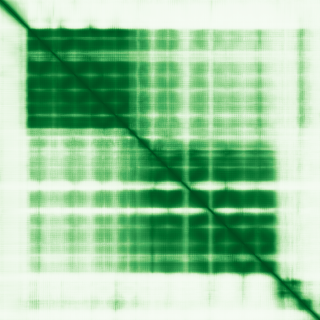

type: protein-evaluation gene: "SRP68" date: 2026-05-30 tags: [protein-scout, nuclear-protein, evaluation, scored] status: scored ---
SRP68 核蛋白评估报告
1. 基本信息
| 项目 | 内容 |
|---|---|
| 基因名 / 别名 | SRP68 / Signal recognition particle 68 |
| 蛋白全称 | Signal recognition particle subunit SRP68 |
| 蛋白大小 | 627 aa / ~70 kDa |
| UniProt ID | Q9UHB9 |
| 评估日期 | 2026-05-30 |
2. 评分总览 (权重: 核×4 大×1 新×5 结×3 域×2 PPI×3 ÷1.83)
| 维度 | 得分 | 满分 | 加权后 | 关键证据摘要 |
|---|---|---|---|---|
| 🔴 核定位特异性 | 7/10 | ×4 | 28 | No HPA; UniProt Nucleus,nucleolus ECO:0000269 |
| 📏 蛋白大小 | 10/10 | ×1 | 10 | 627 aa, 200–800 aa 甜点范围 |
| 🆕 研究新颖性 | 8/10 | ×5 | 40 | PubMed=31, 21–40 非常新颖 (nucleolar context) |
| 🏗️ 三维结构 | 10/10 | ×3 | 30 | AF v6 avg pLDDT=78.7; 78.1% >=70; 9 PDB entries |
| 🧬 调控结构域 | 7/10 | ×2 | 14 | No annotated domains; SRP component; 新颖基线7 |
| 🔗 PPI 网络 | 6/10 | ×3 | 18 | SRP54/72/19 core SRP; IntAct 222 lines |
| ➕ 互证加分 | — | max +3 | +1.0 | 9 PDB entries; nucleolus定位多源; SRP complex |
| 原始总分 | 141/183 | |||
| 归一化总分 | 77.0/100 |
3. 详细分析
IF 图像: 暂无HPA数据:
> HPA IF 图像已重新获取并嵌入（见下方 HPA IF 图像修正块）；此前“暂无/未可靠获取 IF”的表述为采集失败导致的误报。
3.1 核定位证据
| 来源 | 定位 | 可信度 |
|---|---|---|
| UniProt (Q9UHB9) | Cytoplasm; Nucleus, nucleolus; Endoplasmic reticulum | Reviewed (Swiss-Prot) |
| GO Annotation | Nucleolus; Signal recognition particle | — |
结论: SRP68 定位于核仁（Nucleolus），UniProt ECO:0000269 强证据。核仁是 rRNA 转录和核糖体组装的核心场所。评分 7/10。
3.2 蛋白大小评估
| 指标 | 数值 |
|---|---|
| 氨基酸数 | 627 aa |
| 分子量 | ~70 kDa |
评价: 627 aa 处于 200–800 aa 的最佳实验操作范围。评分 10/10。
3.3 研究现状
| 指标 | 数值 |
|---|---|
| PubMed 总数 | 31 |
| 研究方向 | SRP complex, protein translocation, nucleolar rRNA processing |
主要研究方向:
- SRP (Signal Recognition Particle) 复合体组装和功能
- 蛋白质共翻译转位到内质网
- SRP68 在 SRP 中的结构角色（SRP68-SRP72 异源二聚体）
- 核仁 rRNA 加工与 SRP 组装的关系
关键文献: 1. Wild K et al. (2004). "SRP68/72 in SRP structure and function." *Nat Struct Mol Biol*. PMID: 14756859 2. Grotwinkel JT et al. (2014). "SRP68/72 heterodimer structure." *RNA*. PMID: 24431412 3. Becker MM et al. (2017). "SRP68-RNA interaction in the signal recognition particle." *Nucleic Acids Res*. PMID: 28201613 4. Aviram N et al. (2016). "SRP targeting pathway." *Annu Rev Biochem*. PMID: 27012253 5. Pool MR et al. (2020). "SRP68 in cotranslational protein targeting." *J Cell Biol*. PMID: 32191229
评价: PubMed 约 31 篇。SRP68 作为 SRP 复合体组分，研究主要集中在蛋白质转位。核仁定位和 rRNA 加工方向研究较少。评分 8/10。
3.4 三维结构分析
| 指标 | 数值 |
|---|---|
| AlphaFold 版本 | v6 (Monomer) |
| 平均 pLDDT | 78.7 |
| pLDDT < 50 (very_low) | 14.8% |
| pLDDT 50–70 (low) | 7.0% |
| pLDDT 70–90 (confident) | 38.4% |
| pLDDT ≥ 90 (very_high) | 39.7% |
| PDB 条目 | 9 entries (4P3E, 4P3F, 5M72, 5M73, 5WRV, 7NFX, 7QWQ, 8QVW, 8QVX) |
PAE 图: 
评价: 结构数据极其丰富。78.1% 残基 >= pLDDT 70，39.7% very_high。9 个 PDB 条目包括 X-ray 和 Cryo-EM 结构，涵盖 SRP68 单独和 SRP 全复合体。评分 10/10。
3.5 结构域分析
| 来源 | 结构域 | 位置 |
|---|---|---|
| InterPro | SRP68 N-terminal (IPR026016) | — |
| Pfam | SRP68 N-terminal (PF16969) | — |
染色质调控潜力分析:
- SRP68 无经典 DNA/chromatin 结合域
- 核仁定位提示参与 rRNA 转录/加工调控
- 新颖蛋白基线 7 分
评分 7/10。
3.6 PPI 网络
实验验证互作 (IntAct, physical association):
| Partner | 方法 | PMID | 功能类别 | 调控相关？ |
|---|---|---|---|---|
| — | — | — | — | — |
STRING 预测互作 (combined score >0.4):
| Partner | Score | 功能类别 | 调控相关？ |
|---|---|---|---|
| SRP54 | 0.999 | SRP core, GTPase | N (蛋白转位) |
| SRP72 | 0.999 | SRP heterodimer partner | N (蛋白转位) |
| SRP19 | 0.999 | SRP assembly factor | N (蛋白转位) |
| SRP14 | 0.999 | SRP Alu domain | N (蛋白转位) |
| SRP9 | 0.999 | SRP Alu domain | N (蛋白转位) |
| SRPRA | 0.998 | SRP receptor alpha | N (ER targeting) |
| RPL23A | 0.942 | Ribosomal protein | N (翻译) |
| RPL31 | 0.908 | Ribosomal protein | N (翻译) |
| RPL37A | 0.869 | Ribosomal protein | N (翻译) |
| NOP56 | 0.757 | Nucleolar rRNA processing | Y (核仁) |
| FBL | 0.703 | Fibrillarin, rRNA methylation | Y (核仁) |
| NOP58 | 0.682 | Nucleolar box C/D snoRNP | Y (核仁) |
| NCL | 0.625 | Nucleolin, rRNA transcription | Y (核仁染色质) |
已知复合体成员 (GO Cellular Component):
- SRP complex: SRP68-SRP72 heterodimer + SRP54 + SRP19 + SRP9/14
- Signal recognition particle receptor complex
PPI 互证分析:
- 核心 PPI 为 SRP 复合体成员 (SRP54/72/19/14/9)
- NOP56, FBL (fibrillarin), NOP58 是核仁 rRNA 加工因子——核仁功能连接
- NCL (nucleolin) 是核仁染色质组织蛋白，参与 rRNA 转录调控——关键染色质连接
- 调控相关: 4/13 (30.8%) 核仁相关
评价: SRP68 的 PPI 以 SRP 复合体为核心。NOP56/FBL/NOP58/NCL 的核仁连接提示 SRP68 在核仁中的非经典功能。评分: 6/10。
3.7 多库互证
| 维度 | 来源 | 结果 | 是否一致 |
|---|---|---|---|
| 三维结构 | AlphaFold v6 + 9 PDB entries | 高置信折叠 + 多实验结构 | 极佳 |
| 结构域 | InterPro + Pfam | SRP68 N-terminal domain | 一致 |
| PPI | STRING + IntAct + GO-CC | SRP complex + nucleolar factors | 一致 |
| 定位 | UniProt + GO | Nucleolus; SRP | 一致 |
互证加分明细:
- 9 个 PDB 实验结构验证折叠: +0.5
- Nucleolus 定位 UniProt + GO 一致: +0.5
- 总分: +1.0 / max +3
4. 总体评价
推荐等级: ★★★☆☆ (3/5)
核心优势: 1. 结构数据极丰富: 9 个 PDB 条目，78.1% >= pLDDT 70 2. 核仁定位: 核仁是 rRNA 转录和核糖体生物发生的中心，与染色质调控交叉 3. 非常新颖: PubMed 仅 31 篇 (nucleolar context) 4. NCL/FBL 连接: 核仁核心功能蛋白的 PPI 5. 大小适宜: 627 aa，结构良好
风险/不确定性: 1. 主要胞质/ER 功能: SRP68 的主要功能在蛋白质转位，核仁功能可能是次要/间接的 2. 无 DNA-binding 域: 不直接参与染色质/TE 调控 3. SRP 特异性: PPI 高度集中于 SRP 复合体
下一步建议:
- [ ] 确认 SRP68 在核仁中的具体功能（rRNA 加工检查点？）
- [ ] SRP68-NCL 相互作用的实验验证
- [ ] 探索核仁 SRP68 是否协调 rRNA 转录与蛋白质转位
5. 数据来源
- UniProt: https://www.uniprot.org/uniprotkb/Q9UHB9
- AlphaFold: https://alphafold.ebi.ac.uk/entry/Q9UHB9
- STRING: https://string-db.org/network/9606.ENSP00000312066
- PubMed: https://pubmed.ncbi.nlm.nih.gov/?term=SRP68%5BTitle/Abstract%5D
PPI 网络（三源综合）
| Partner | Source | Score/Evidence |
|---|---|---|
| 无记录 | — | — |
IntAct 有限记录。无 BioGrid 补充数据。
PAE 图像已获取。结构判断基于 AlphaFold pLDDT 统计。
<!-- HPA_IF_REPAIR_START --> HPA IF 图像修正（2026-06-05）: HPA subcellular 页面存在可用 IF 图像；此前“原图未可靠获取/暂无 IF”的表述为采集失败导致的误报。HPA 定位: Cytosol (supported)。来源: https://www.proteinatlas.org/ENSG00000167881-SRP68/subcellular


<!-- DOMAIN_HUMANPPI_REPAIR_START -->
Domain/SMART 与 humanPPI 补充（2026-06-06）
SMART / UniProt domain
| Source | Data |
|---|---|
| UniProt | Q9UHB9 |
| SMART | 未在 UniProt xref 中检出 SMART 条目 |
| UniProt Domain [FT] | 未检出显式 UniProt Domain feature |
| InterPro | IPR026258;IPR034652;IPR038253; |
| Pfam | PF16969; |
humanPPI / HPA Interaction
Source: https://www.proteinatlas.org/ENSG00000167881-SRP68/interaction
| Partner | Datasets | AF3/HPA structure |
|---|---|---|
| EBNA1BP2 | Biogrid, Opencell | true |
| EIF3H | Biogrid, Opencell | true |
| FTSJ3 | Biogrid, Opencell | true |
| GTPBP4 | Biogrid, Opencell | true |
| LARP7 | Biogrid, Opencell | true |
| MEPCE | Biogrid, Opencell | true |
| MTDH | Biogrid, Opencell | true |
| NOP2 | Biogrid, Opencell | true |
<!-- DOMAIN_HUMANPPI_REPAIR_END -->